http://my.oschina.net/itblog/blog/547250
http://baidu.blog.51cto.com/71938/1676798
1、ELK由ElasticSearch、Logstash和Kiabana三个开源工具组成。官方网站：https://www.elastic.co/products
• Elasticsearch是个开源分布式搜索引擎，它的特点有：分布式，零配置，自动发现，索引自动分片，索引副本机制，restful风格接口，多数据源，自动搜索负载等。
• Logstash是一个完全开源的工具，他可以对你的日志进行收集、过滤，并将其存储供以后使用（如，搜索）。
• Kibana 也是一个开源和免费的工具，它Kibana可以为 Logstash 和 ElasticSearch 提供的日志分析友好的 Web 界面，可以帮助您汇总、分析和搜索重要数据日志。
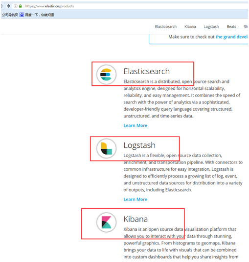
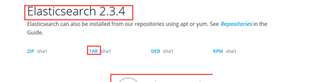
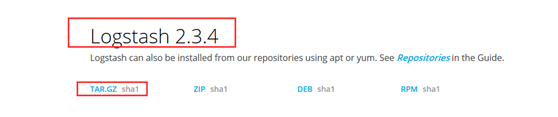
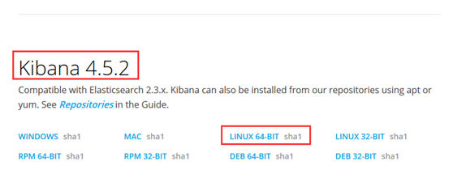
• 画了一个ELK工作的原理图：
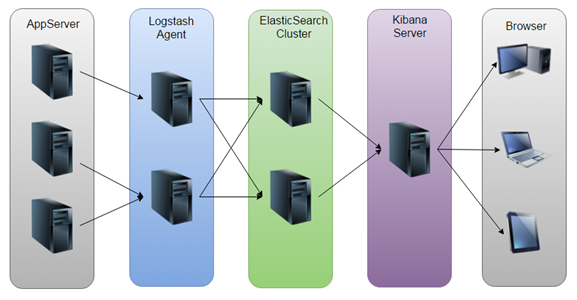
• 如图：Logstash收集AppServer产生的Log，并存放到ElasticSearch集群中，而Kibana则从ES集群中查询数据生成图表，再返回给Browser。
2、环境：
Linux:
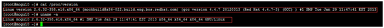
Elasticsearch：elasticsearch-2.3.4.tar.gz
Logstash：logstash-2.3.4.tar.gz
Kibana：kibana-4.5.2-linux-x64.tar.gz
Jdk：jdk-8u91-linux-x64.tar.gz
3、jdk的安装：
mkdir -p /usr/local/java/
tar -zxvf jdk-8u91-linux-x64.tar.gz -C /usr/local/java/
vim /etc/profile
加入：
JAVA_HOME=/usr/local/java/jdk1.8.0_91
PATH=$JAVA_HOME/bin:$PATH
CLASSPATH=.:$JAVA_HOME/lib/dt.jar:$JAVA_HOME/lib/tools.jar
export JAVA_HOME
export PATH
export CLASSPATH
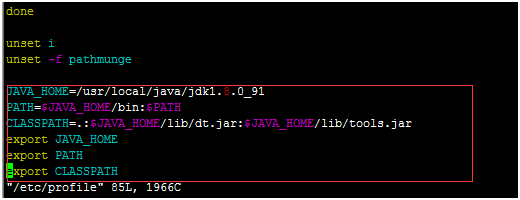
执行：
. /etc/profile #生效配置
java -version
4、安装配置Elasticsearch
4.1、安装配置Elasticsearch
tar -zxvf elasticsearch-2.3.4.tar.gz
cd elasticsearch-2.3.4
然后编辑ES的配置文件：
vim config/elasticsearch.yml
修改以下配置项：
cluster.name: wen
node.name: node-1
path.data: /path/to/data
path.logs: /path/to/logs
当前hostname或IP，这里使用ip
network.host: 10.10.20.210
http.port: 9200
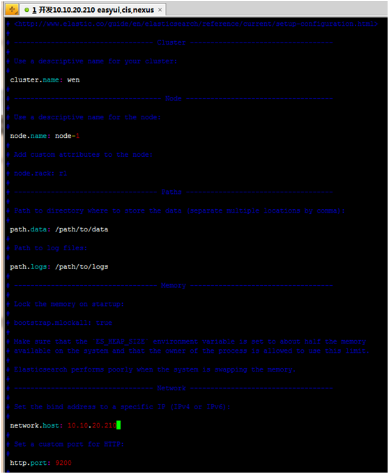
4.2、启动elasticsearch
./bin/elasticsearch
报错：
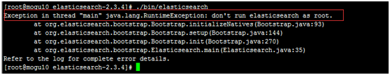
不能使用root用户启动elasticsearch
解决方法: http://my.oschina.net/topeagle/blog/591451?fromerr=mzOr2qzZ
将/data/soft/ch/elasticsearch-2.3.4/所属用户和组改为另外一个非root账户:
4.2.1、创建esgp组
groupadd esgp
4.2.2、创建用户es 添加到esgp组设置用户的密码为es123
useradd es -g esgp -p es123
4.2.3、更改elasticsearch-2.3.4文件夹及内部文件的所属用户及组为es:esgp
chown -R es:esgp elasticsearch-2.3.4
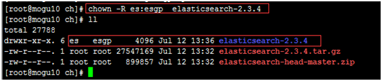
4.2.4、切换到es用户
su es
4.2.5、启动elasticsearch
./elasticsearch-2.3.4/bin/elasticsearch
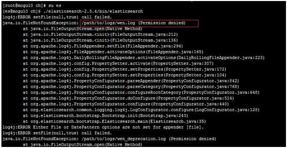
修改/path/to/logs/和/path/to/data/的权限：设置/path的用户为es,组为esgp
su root
chown -R es:esgp /path
再启动elasticsearch
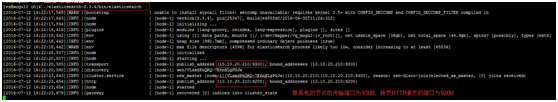
使用ctrl+C停止。当然，也可以使用后台进程的方式启动ES：
./elasticsearch-2.3.4/bin/elasticsearch –d
或者
./elasticsearch-2.3.4/bin/elasticsearch &
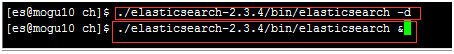
4.2.6、可以打开页面10.10.20.210:920，将会看到以下内容
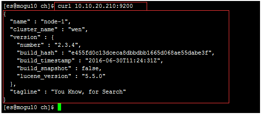
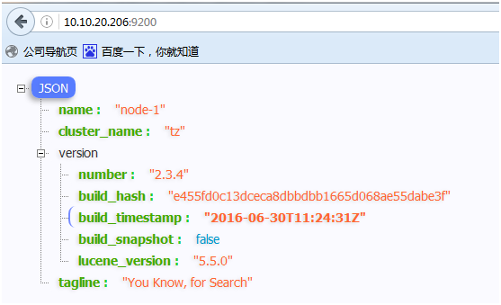
5、安装elasticsearch的插件：elasticsearch-head
https://github.com/mobz/elasticsearch-head
http://blog.csdn.net/july_2/article/details/24481935
5.1、插件安装方法1：
5.1.1.#./elasticsearch-2.3.4/bin/plugin -install mobz/elasticsearch-head
5.1.2.运行es
5.1.3.打开
http://10.10.20.210:9200/_plugin/head/
5.2、插件安装方法2：
5.2.1.https://github.com/mobz/elasticsearch-head下载zip 解压
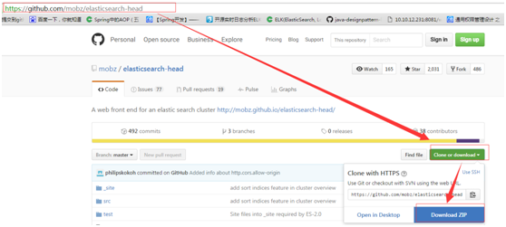
5.2.2.建立elasticsearch-2.3.4/plugins/head/_site文件
mkdir -p ./elasticsearch-2.3.4/plugins/head/_site
5.2.3.将解压后的elasticsearch-head-master文件夹下的文件copy到_site
1 | su root #切换到root用户 |
5.2.4.运行es
1
2 su es #切换到es用户
/data/soft/ch/elasticsearch-2.3.4/bin/elasticsearch
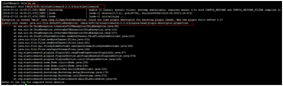
会报错，如上，拷贝plugin-descriptor.properties文件
1 | cp /data/soft/ch/elasticsearch-2.3.4/plugins/head/\_site/plugin-descriptor.properties /data/soft/ch/elasticsearch-2.3.4/plugins/head/ |
再启动elasticsearch
5.2.5.打开http://10.10.20.210:9200/`_plugin`/head/
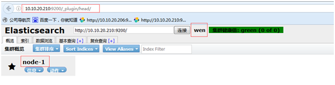
6、安装logstash-2.3.4.tar.gz
1 | tar -zxvf logstash-2.3.4.tar.gz |
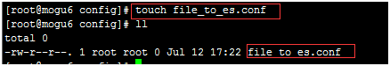
1
vim file_to_es.conf
输入内容：
1 | #For detail structure of this file |
启动logstash
1 | ./logstash-2.3.4/bin/logstash agent -f ./logstash-2.3.4/config/file_to_es.conf |
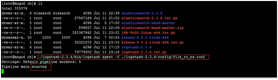
后台启动（加上&）：
1 | ./logstash-2.3.4/bin/logstash agent -f ./logstash-2.3.4/config/file_to_es.conf & |
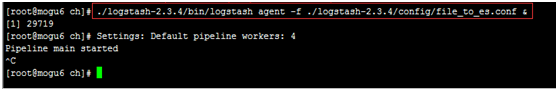
查看进程
可以在http://10.10.20.210:9200/`_plugin`/head/中看到自动创建了ware-manager-dev这个索引，里面保存的是ware-manager这个项目的日志
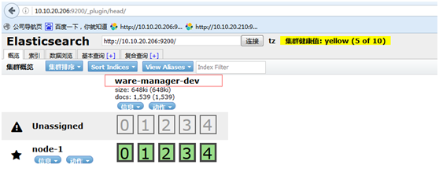
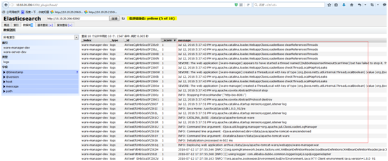
注意：如果在同一个服务器对不同的文件，设置不同的索引，那么可以增加配置文件然后制定配置文件启动即可
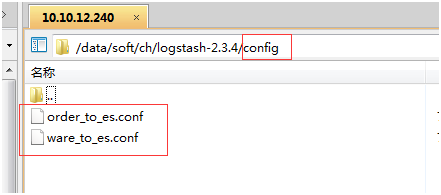
1
2# ./logstash-2.3.4/bin/logstash agent -f ./logstash-2.3.4/config/order_to_es.conf &
#./logstash-2.3.4/bin/logstash agent -f ./logstash-2.3.4/config/ware_to_es.conf &
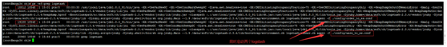
1 | order_to_es.conf的内容： |
7、安装kibana
1 | tar -zxvf kibana-4.5.2-linux-x64.tar.gz |
修改内容如下：
1 | server.port: 5601 |
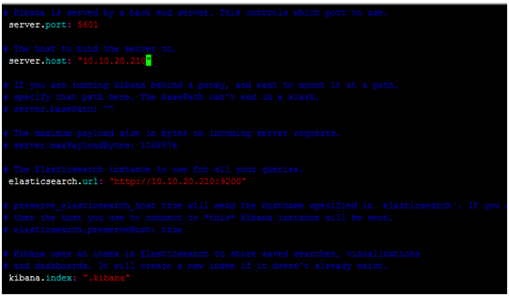
注意：其中server.host是安装kibana服务的地址
elasticsearch.url为elasticsearch安装的地址
启动kibana
1 | /data/soft/ch/kibana-4.5.2-linux-x64/bin/kibana |
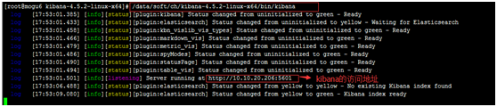
可以通过http://10.10.20.206:5601访问到。
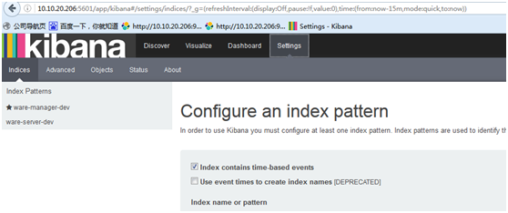
也可以后台启动kibana(加上&)
/data/soft/ch/kibana-4.5.2-linux-x64/bin/kibana &
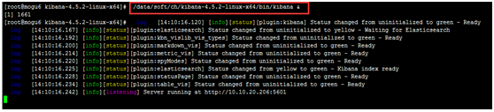
注意：这时加上了&虽然执行了后台启动，但是还是有日志打印出来，使用ctrl+c可以退出。
但是如果直接关闭了Xshell,这时服务也会停止，访问http://10.10.20.206:5601就失败了。
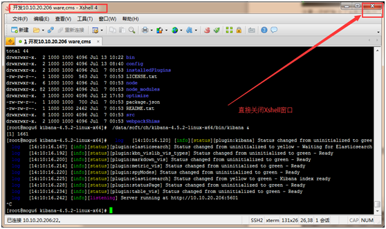
解决方法：
执行了/data/soft/ch/kibana-4.5.2-linux-x64/bin/kibana &命令后，不使用ctrl+c去退出日志，
而是使用exit;这样即使关闭了Xshell窗口服务也不会挂了。
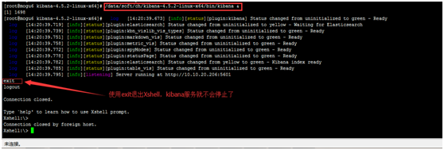
配置kibana：
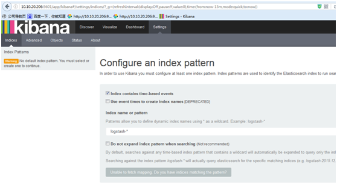
这时在elasticsearch中多了一个kibana的索引
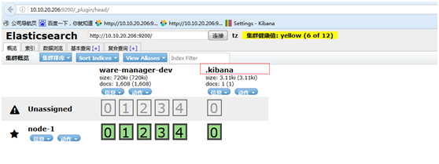
为了后续使用Kibana，需要配置至少一个Index名字或者Pattern，它用于在分析时确定ES中的Index。这里我输入之前配置的Index 名字ware-manager-dev，Kibana会自动加载该Index下doc的field，并自动选择合适的field用于图标中的时间字段：
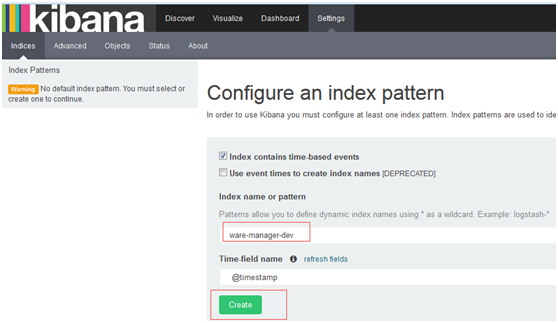
点击Discover查看日志
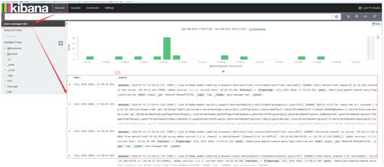
设置只查看message信息:
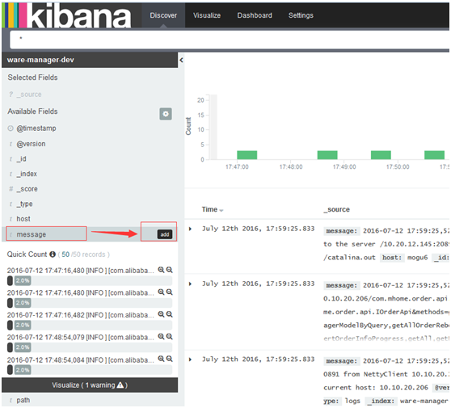
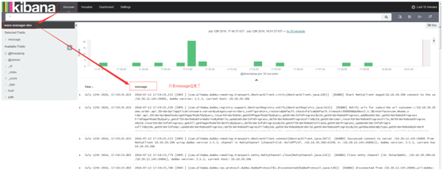
设置自动刷新：
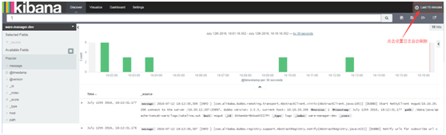
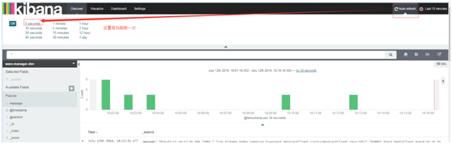
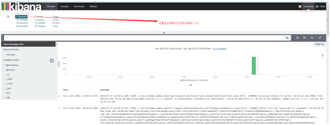
更多配置请查看：
http://my.oschina.net/itblog/blog/547250